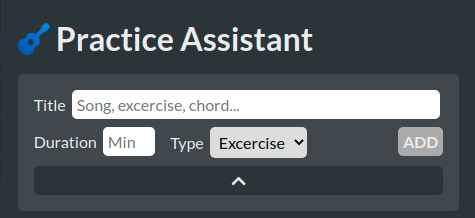

Create your own practice items
Create, edit, delete your practice items easily, so you can practice as efficiently as possible.

Completely FREE guitar practice assistant for every guitarist.
Whether you are just starting out, or playing for years, a great
practice routine helps you to get to the next level.
Create, edit, delete your practice items easily, so you can practice as efficiently as possible.
Navigation is super easy between your practice items. Each item has it's own timer so you know how much time you put in.
Simple and super easy-to-use metronome. The most important thing for any musician is keeping time. You can practice with a metronome under the Metronome tab.
Guitar PA is FREE and easy to use app to help you become the best guitarist you can be. Here you will find everything you need for your practice sessions. It is built with simplicity in mind so you can focus on learning to play.